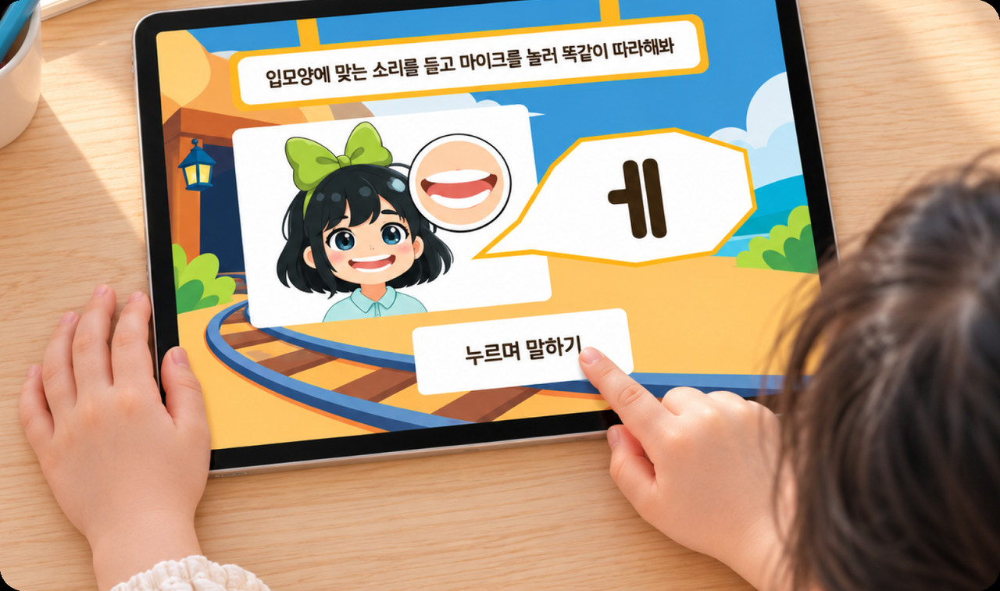
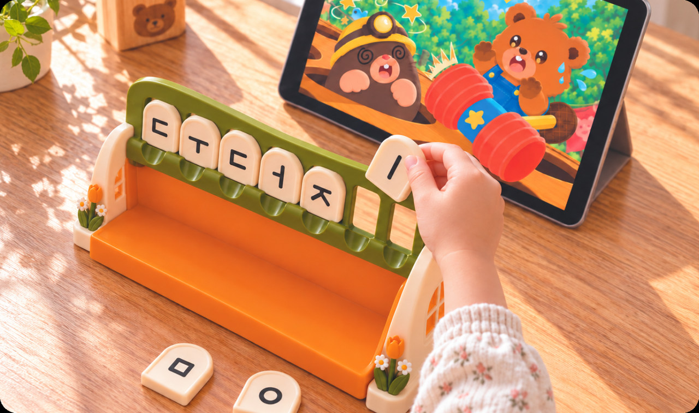

집에서도 꾸준히 하니 읽기 자신감이 생겼어요.
학원이나 센터에 자주 가기 어려워서 집에서 해볼 수 있는 방법을 찾고 있었어요.
읽:꼬는 아이가 놀이처럼 참여해서 부담 없이 시작할 수 있었고,
매일 조금씩 반복하니 스스로 소리 내어 읽어보려는 모습이 정말 많이 늘었어요.

30만 부모님이 선택한 난독증 재택 훈련 서비스 읽:꼬
읽:꼬를 이용해주신 고객님들의 후기를 확인해보세요!
학원이나 센터에 자주 가기 어려워서 집에서 해볼 수 있는 방법을 찾고 있었어요.
읽:꼬는 아이가 놀이처럼 참여해서 부담 없이 시작할 수 있었고,
매일 조금씩 반복하니 스스로 소리 내어 읽어보려는 모습이 정말 많이 늘었어요.

맞벌이라 시간을 맞추기 어려웠는데 태블릿과 교구만 있으면 바로 시작할 수 있어서 편했어요.
아이가 자음과 모음을 만지고 맞추는 활동을 좋아해서 훈련 시간을 기다리더라고요.
무엇보다 부모가 옆에서 어렵게 설명하지 않아도 단계별로 따라갈 수 있는 점이 만족스러웠어요.

처음에는 글자 읽기를 어려워해서 금방 지칠까 걱정했는데 캐릭터와 게임 요소 덕분에 집중을 잘했어요.
오늘은 몇 단계까지 해볼지 스스로 정하고 끝까지 해내는 모습이 인상 깊었어요.
읽기 연습뿐 아니라 아이의 성취감과 자기주도성이 함께 자라는 서비스라서 추천하고 싶어요.
아이와 함께한 읽기 훈련 경험을 들려주세요.